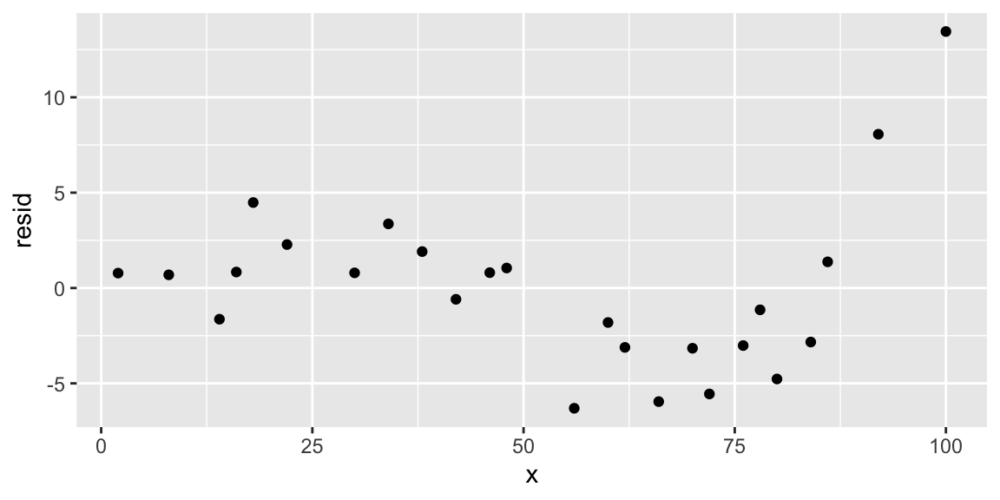
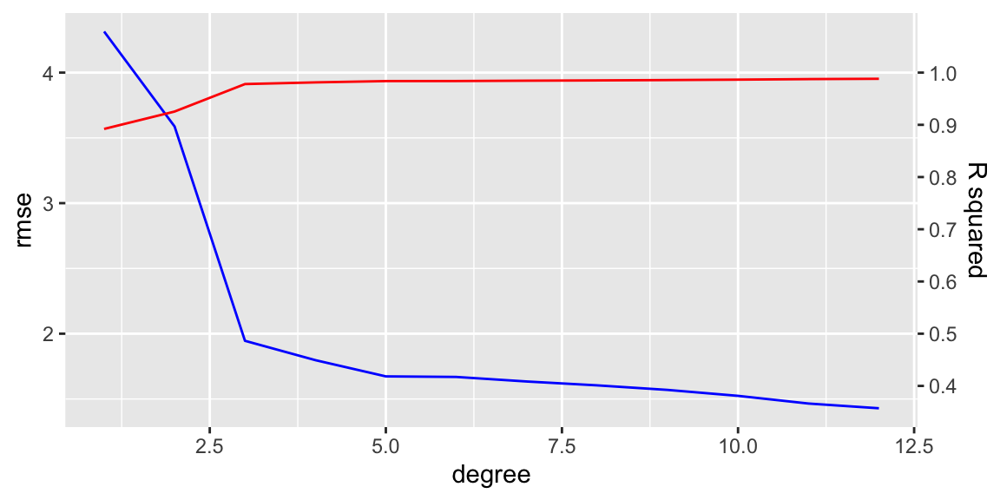
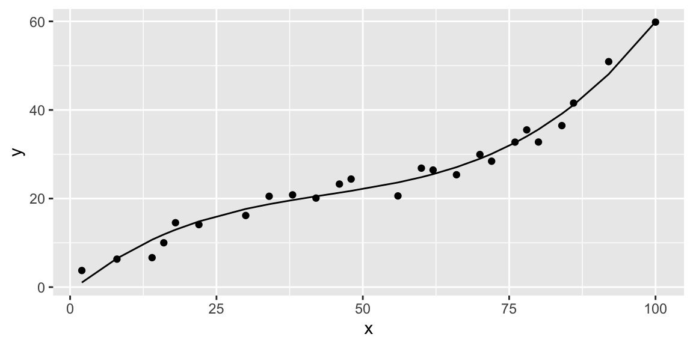

data <- read_csv("https://paolobosetti.quarto.pub/data/kfold.csv",
show_col_types = FALSE)
data %>% ggplot(aes(x=x, y=y)) + geom_point()K-Fold Cross Validation
Loading the data
We load the data from a web address and make a quick plot:
Linear model regression
The regression of a linear model is performed with the lm() function. It takes two arguments:
- a formula, i.e. a description of the regression model
- a data table, containing the data set to use for regression. The columns of the data set must have the same names used for the predictors
The formula is expressed in the formula notation, which is a map from an analytical regression model, as \(y_i = a + bx_i + cx_i^2 + \varepsilon_i\) to a formula object as y~x + I(x^2)
To build a formula from a model you typically:
- drop the grand average \(a\) and the residuals \(\varepsilon_i\)
- when you need the power of a term (or any mathematical function applied to a term like a logarithm), you have to protect it with the identity function
I() - if you have more than one predictor, you can combine them as
y~x1 + x2, which corresponds to \(y_i = a + bx_{1,i} + cx_{2,1} + \varepsilon_i\) or asy~x1 + x2 + x1:x2, which corresponds to \(y_i = a + bx_{1,i} + cx_{2,1} + dx_{1,i}x_{2,i} +\varepsilon_i\) - the notation
y~x1 + x2 + x1:x2can be abbreviated asy~x1*x2 - to remove from the model the grand average (called intercept), subtract 1: \(y_i = bx_i + cx_i^2 + \varepsilon_i\) becomes
y~x + I(x^2) - 1
So let’s build a linear model of degree 2:
data.lm <-lm(y~x - 1, data=data)
data %>%
add_predictions(data.lm) %>%
ggplot(aes(x=x)) +
geom_point(aes(y=y)) +
geom_line(aes(y=pred))data %>%
add_residuals(data.lm) %>%
ggplot(aes(x=x, y=resid)) +
geom_point()
We note that the residuals show a rather strong pattern, meaning that the linear relationship is underfitting the data, and thus we need to increase the degree of the fitting polynomial. But how much so?
Multiple regressions
The degree of the fitting polynomial is a hyper-parameter. In fact, regression parameters are the coeffiients of the polynomial, to be calculated typically by minimizing the root mean square of the residuals. But the degree of the polynomial is a parameter that defines the number of regression parameters, and that is why it is named a hyper-parameter. Identifying the best hyper-parameter(s) is the aim of validation and cross-validation strategies.
In our case we want to compare polynomial fits up to degree 12. We use modelr::fit_with() to automate the building of many models together. The function needs two arguments:
- the modeling function, typically
lm() - the results of a call to
formulas(), which in turn takes a list of formulas to be used. This list needs to have only right hand side formulas, being the first the response variable, the others are the model part combining the predictors
We first build a list of arguments:
deg <- 2:12
args <- list(
~y, ~x,
map(deg, ~as.formula(paste0("~poly(x,", ., ")")))
) %>%
unlist()Note the usage of unlist() at the end: the previous command returns a nested list (a list of lists), and unlist() flattens it into a simple plain list of formulas.
Now the formulas() function wants n parameters, each being a formula, while we have a list of formulas. We can solve this problem by using do.call() function, which calls a given function passing each element of a list as a separate argument:
fits <- data %>% fit_with(
lm,
.formulas=do.call(formulas, args)
)Quality of a regression can be verified with different metrics:
- \(R^2=1-\frac{\sum (x_i - \hat x_i)^2}{\sum (x_i - \bar x_i)^2}\)
- \(\mathrm{MSE}=\frac{\sum(x_i - \hat x_i)^2}{N}\)
- \(\mathrm{RMSE}=\sqrt{\frac{\sum(x_i - \hat x_i)^2}{N}}\)
- \(\mathrm{MAE}=\frac{\sum |x_i - \hat x_i|}{N}\)
- \(\mathrm{MAPE}=\frac{1}{N}\sum \left|\frac{x_i - \hat x_i}{x_i}\right|\)
Typically, the root means square of error (RMSE) and the mean absolute error (MAE) are the most commonly used metrics.
Let’s see how the RMSE and the \(R^2\) metrics change when the polynomial degree increases. To do that we build a table with three columns:
- the degree of the polynomial
- the \(R^2\) value
- the RMSE value
We extract these data from the list of linear models above created, fits. For each fitted linear model (an entry in fits), the \(R^2\) and RMSE can be extracted with the functions rsquare() and rmse(), respectively.
We use map_dbl() to map these functions over the list of polynomial degrees. The resulting table is then used to make a plot:
tibble(
degree=c(1,deg), # deg starts from 2!
rsquare=fits %>% map_dbl(~rsquare(., data)),
rmse=fits %>% map_dbl(~rmse(., data))
) %>%
ggplot(aes(x=degree)) +
geom_line(aes(y=rmse), color="blue") +
geom_line(aes(y=rsquare*4), color="red") +
scale_y_continuous(sec.axis = sec_axis(
\(x) scales::rescale(x, from=c(0,4), to=c(0,1)),
breaks=seq(0, 1, 0.1),
name="R squared"))
The \(R^2\) increases pretty quickly and saturates after degree 3. The RMSE decreases sharply and monothonically. It’s hard to figure out the point where overfitting starts.
K-fold cross-validation
To solve the problem we use K-fold cross validation. It is a regression strategy where we split the dataset into \(k\) subsets, or folds, with roughly the same amount of observations. Then:
- we train the model over all the folds together except the first fold, and then we validate the model on the first model, i.e. we calculate one or more metrics on the validation data
- we repeat the previous step setting aside each fold, one at a time, and using it for validation, while the remaining folds are used for training
- each fold is used exactly once for validation, exactly \(k-1\) times for training
- we calculate the overall metrics, by calculating the average of the \(k\) metrics evaluated for each validation step, or — equivalently — by appliying the above reported equations to the whole set of validation values
In R, we use the caret library to simplify this process. The caret::train() function performs the folding for a given model: it takes as arguments the model formula, the regression function (in our case lm()), the dataset, and a list of parameters that can be created with the supporting trainControl() function.
The trainControl() function is used to define the details on the cross validation strategy to use. In our case we use the repeated K-fold cross validation, named "repeatedcv", which repeates a K-fold a given number of times.
In fact, the folds are defined by randomly sampling the initial dataset, so that the resulting RMSE (or any other metric) is also a random variable. Repeating the K-fold 100 times makes the whole process more robust:
ctrl <- trainControl(method = "repeatedcv", number=5, repeats=100)
model <- train(y~poly(x,8), data=data, method="lm", trControl=ctrl)
modelLinear Regression
25 samples
1 predictor
No pre-processing
Resampling: Cross-Validated (5 fold, repeated 100 times)
Summary of sample sizes: 20, 20, 21, 20, 19, 20, ...
Resampling results:
RMSE Rsquared MAE
10.3213 0.9241026 6.25129
Tuning parameter 'intercept' was held constant at a value of TRUEThe model object contains a field named model$results that is a table with all the available performance metrics:
| intercept | RMSE | Rsquared | MAE | RMSESD | RsquaredSD | MAESD |
|---|---|---|---|---|---|---|
| TRUE | 10.3213 | 0.9241026 | 6.25129 | 23.37541 | 0.1183862 | 12.14192 |
Now we want to repeat the K-fold validation over the list of formulas corresponding to the set of polynomials with degrees from 1 to 12. We use again the map() function:
fit_quality <- tibble(
degree=c(1,deg),
results=map(degree, function(n) {
fm <- paste0("y~poly(x,", n, ")") %>% as.formula()
train(fm, data=data, method="lm", trControl=ctrl)$results
})
) %>%
unnest(cols=results)Note the unnest() function at the end: the model field $results is actualy a table, so without that function in fit_quality we would get a column results that contains a list of tables. The unnest() function flattens this list of tables in place.
Now we can finally make a plot of the metrics as a function of the polynomial degree:
fit_quality %>%
select(-intercept, -starts_with("Rsquared")) %>%
pivot_longer(-degree, names_to = "metric") %>%
ggplot(aes(x=degree, y=value, group=metric, color=metric)) +
geom_line() +
geom_point() +
scale_y_log10() +
scale_x_continuous(breaks=c(1,deg))
We observe that the minima of any metric happens at degree 3. This means that below that value we have underfitting, above we have overfitting (i.e. the model is loosing generality).
Regression
So we can finally accept the model \(y_i=a + bx_i + cx_i^2 + dx_i^3 + \varepsilon_i\) (a degree 3 polynomial in \(x_i\)):
data.lm <- lm(y~poly(x, 3), data=data)
data %>%
add_predictions(data.lm) %>%
ggplot(aes(x=x, y=y)) +
geom_point() +
geom_line(aes(y=pred))
data %>%
add_residuals(data.lm) %>%
ggplot(aes(x=x, y=resid)) +
geom_point()We confirm that the residuals are free from patterns. We can also plot a confidence interval of the same regression by using the geom_smooth() layer in a ggplot:
data %>%
ggplot(aes(x=x, y=y)) +
geom_point() +
geom_smooth(method="lm", formula=y~poly(x, 3))